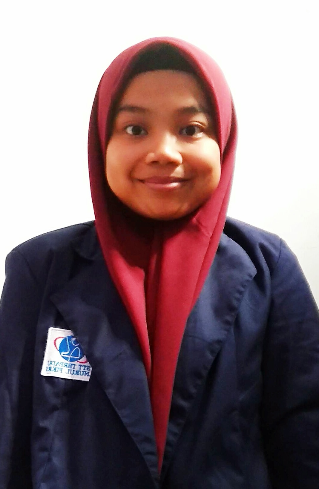

Curiculum Vitae
 DATA PRIBADI
- Nama : Zahra Atikah Rahmah
- Tempat Lahir : Bekasi
- Tanggal Lahir: 16 November 2001
- Alamat : Jl.Setia Gg.Borah RT/RW 007/001 No.10 Kel.Bojong Rawa Lumbu Kec.Rawalumbu Kab.Bekasi
- Email :zahratikah.16@gmail.com
- No.Telepon : +6283806182008
- Agama : Islam
- Jenis Kelamin: Perempuan
- Gol. Darah : o
RIWAYAT PENDIDIKAN
| Nama Instansi | Tingkat Pendidikan | Tahun |
|---|---|---|
| TKIT Alfath | Taman Kanak-Kanak (TK) | 2006-2007 |
| SDIT Alfath | Sekolah Dasar (SD) | 2007-2009 |
| SDI Baabut Taubah | Sekolah Dasar(SD) | 2009-2013 |
| SMPIT Mimbar Huffazh | Sekolah Menengah Pratama (SMP) | 2013-2016 |
| SMAIT Bunyan Indonesia | Sekolah Menengah Atas (SMA) | 2016-2019 |
| STT Terpadu Nurul Fikri | Sarjana (S1) | 2019-sekarang |
PENGALAMAN ORGANISASI
- Ketua Divisi Bahasa, OSIS, 2014
- Ketua Divisi Kreatifitas, OSIS, 2015
- Menteri Media Aplikatif, BEM, 2020
HOBI
Saya memiliki hobi menonton film ataupun drama, saya suka semua genre keculai horror, entah kenapa jika nonton horror saya akan selalu terbayang terus hantunya atau terkadang saya mencoba menu masakan baru untuk cemilan saya dan keluarga biasanya melihat resep dari youtube ataupun instagram.
SOSIAL MEDIA